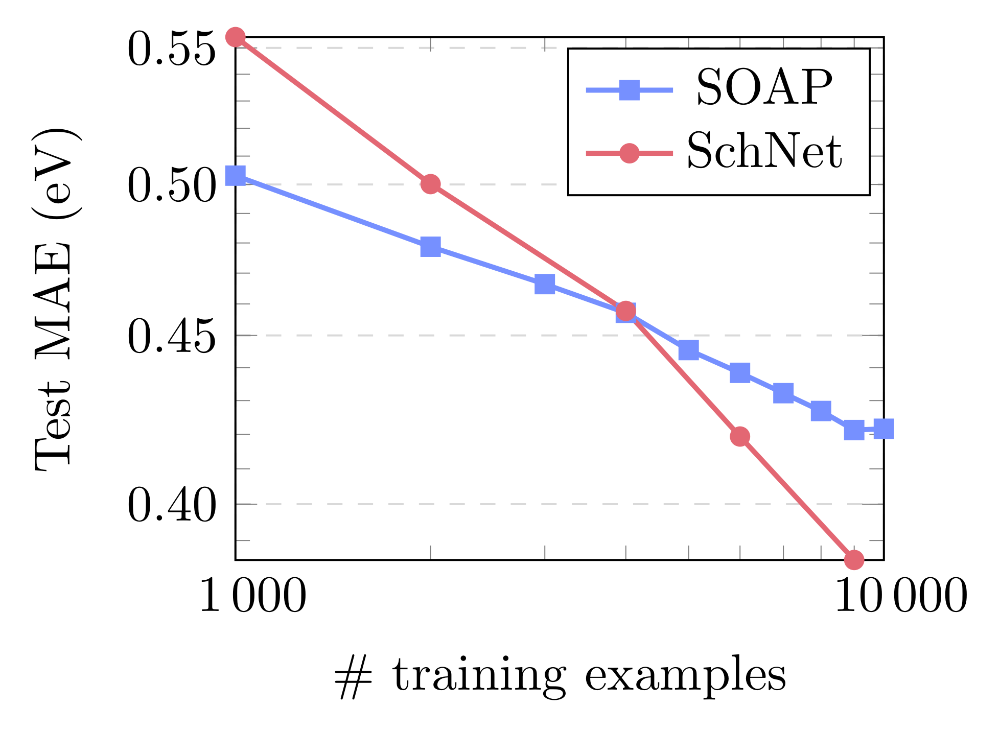

Band gap prediction for large organic crystal structures with machine learning
Bart Olsthoorn1, R. Matthias Geilhufe1, Stanislav S. Borysov2, Alexander V. Balatsky1
- 1 Nordita, KTH Royal Institute of Technology and Stockholm University, Sweden
- 2 DTU Technical University of Denmark, Denmark

arXiv:1810.12814
- Free to use: omdb.diracmaterials.org
- VASP, PBE
- ~25,000 materials
- Advanced data mining tools
OMDB-GAP1: A new dataset for machine learning
12,500 materials and DFT band gaps
2.83 eV
OMDB-GAP1: A new dataset for machine learning
Organic crystals spanning 65 elements and 67 space groups.
| Name | Size | Type | N | Consistent |
|---|---|---|---|---|
| QM9 | 133,885 | Organic molecules | 18 | ✔ |
| Materials Project | 53,340 | Crystals | 27 | ✖ |
| OMDB-GAP1 | 12,500 | Organic crystals | 85 | ✔ |
Download: omdb.diracmaterials.org/dataset
arXiv:1810.12814
Models and complexity
Density functional theory (DFT)
Computational demand:
O(N2atomslog(Natoms)) to O(N3atoms)
Around 60 core hours per material
→ 750k core hours for entire dataset
Machine learning
SOAP+KRR — O(Ntrain)
SchNet — O(Natoms)
OMDB-GAP1: A benchmark

| Name | MAE (eV) |
|---|---|
| SOAP+KRR | 0.418 |
| SchNet | 0.378 |
| SOAP/SchNet ensemble | 0.361 |
Structural similarity and band gap
Interactive version:
https://omdb.diracmaterials.org/dataset/OMDB1/interactive (arXiv:1810.12814)
A new platform for machine learning: omdb.diracmaterials.org
Thank you!
Bart Olsthoorn
R. Matthias Geilhufe
Stanislav S. Borysov
Alexander V. Balatsky